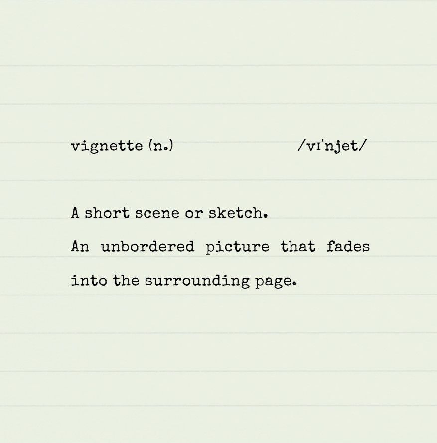

Journey 07 · Romania Note 5 of 7 Stories of
Stories of Romania: Vignettes

The Librarian
The librarian was my first friend.
At least, she was the first person who felt like one. When I arrived, my Romanian consisted mostly of enthusiasm and determination. The library became one of the places where I practiced.
Numbers were particularly challenging, as they were close but not quite what I already had in my head from high school French and my cell phone app featuring an insistent green owl and too many sampled courses.
I would stumble through numbers and phrases slowly while she listened with remarkable patience. Sometimes she corrected me, other times encouraged. Either way, she never made me feel embarrassed for trying and she always celebrated excitedly when I successfully managed a phrase or to show off an ability to count to ten.
She showed me where the English books were. We talked about our families and pets. I told her my big ideas and struggles of being overwhelmed with information. She shared some of her artwork.
Her artwork was made from folded book pages transformed into sculptures and patterns. It struck me as exactly the sort of art a librarian would make: it was not replacing old books with something new, but finding another way for them to tell a different story.
When I came into the library, there was always a wave, always a smile. At first these seemed like small things, but over time I realized they were doing something much larger.
In a city where everything was new, the library became a place where I no longer had to introduce myself.
I was expected. And there is comfort in that.
The Teacher
There is a kind of loneliness that comes with being new.
Not lonely in the sense of being alone. Lonely in the sense that everyone else seems to understand how the world works, which holidays matter and why a particular flower is symbolic. They know the patterns of a place, like how waiting rooms work or how to walk into a restaurant and order lunch. They know which traditions survive because they are useful and which survive because they are loved.
My Romanian teacher helped with that sense of being unmoored from a place. Not simply because she taught Romanian and I needed the language to move through the city. But because she gave me something more than just words.
She certainly taught us Romanian! There were grammar exercises, pronunciation corrections, and enough verb conjugations to run my pen out of ink.
But that is not what I remember most. I remember her stories.
A holiday. Not just the name, but its history and why people celebrated it. A word, and where it came from. A sweet dessert and what it symbolizes, and who made it for us.
Traditions and a place that suddenly made more sense once someone explained it.
Sometimes she would explain Romanian through French, then French through English, then connect both to Italian or Turkish or German. Other times, she would pantomime actions or objects, and we built our understanding through championship charades. The result was mildly chaotic and surprisingly effective.
I arrived hoping to learn Romanian. Instead, I found myself learning how languages recognize one another.
And how people do too.
The Artist
Every dorm has a few people who seem to know everyone. They say hello passing people on the stairs, always seem to know what is happening, and remember everyone’s name. The artist was one of those people. The difference was that he didn’t just know our names or where the largest crowd would be meeting that night.
Most greetings last a few seconds, but his never did.
He would stop, make eye contact, shake someone’s hand, and ask about something they had mentioned days earlier. A paper, a trip, a project or an exam. Whatever it was or however long ago, he always seemed to remember.
The conversations were often brief, but the effect lasted much longer. People walked away feeling not just remembered, but seen. And in a place where different countries and cultures and strangers are all being brought together, sometimes being seen is the highlight of your day.
When he wasn’t studying, he was usually drawing. Comic pages, character sketches, illustrations, and, most memorably, a project that gradually spread across his sketchbook.
As he met Erasmus students, he would ask where they were from. Then he would ask or research an animal that represents their country and add it to the growing illustration. A proud rooster, a crouching snow leopard, a wolf singing a silent song, an unbothered camel. A few days after we first met, he showed me the updated sketch, now featuring a powerful bald eagle.
At first glance, it looked like a collection of animals. But the longer I looked, the more it resembled a collection of people.
The Professor
I arrived prepared. I had notes, diagrams, and an extensive annotated bibliography from weeks buried under academic journals.
I had ideas connected to other ideas connected to still more ideas.
By the time I finished explaining what I wanted to study, I had built something resembling an academic conspiracy board. The professor listened patiently until I finally ran out of momentum.
Then he began to unravel my tangled board of ideas, uncovering the rich vein hidden under it all.
I arrived prepared to discuss castles in the sky. The professor listened politely, then he handed me a hammer.
The Musicians
One afternoon, I found myself sitting in the piazza with a book.
Not because I had planned to. There were still many things on my list I could have been doing, photos I could have been taking and experiences I could have been collecting.
Instead, I sat. I breathed in the town, let the people flow around me like a rock sitting in a river, and I just existed in the moment, resting my tired legs and enjoying the crisp breeze and warm sunlight.
Nearby, a couple of boys had set up with guitars. They were playing songs in English for passing tourists.
The performance was not perfect: The timing wandered, the words weren’t always said quite right, occasionally the music just abruptly stopped. They passed their guitars between themselves, teaching and learning and practicing all at the same time.
Every once in a while they would stop, laugh, regroup, and try again. They huddled over a cell phone, practicing a Lumineers song. Hey, Ho. I belong with you, you belong with me.
I do not remember whether they actually ever got all the way through the song successfully, but the chorus was always passionate and strong and repeated more times than technically called for in the sheet music.
I do remember that they kept trying. When they packed up to leave, I tipped them 50 lei.
The reaction suggested I had handed them the moon.
The Taxi Driver
I found myself in trouble: Traffic was terrible.
I had built plenty of buffer time into my plan for the day, heading outside of the city in the early morning hours and knowing the return trip would be longer than most of the rides I take. But as I tried one application after another, the ride-share drivers who accepted rides would cancel them within moments of seeing my destination.
Again.
And again.
The clock was ticking, and I was watching my generous buffer of time slowly shrink away until I reached the red zone of “you must leave now”. I approached a line of taxi drivers and explained my situation.
No one wanted the job. The traffic, they explained, was too bad because of construction. It isn’t worth the trip from here to there.
So, I pulled out my wallet and offered enough money to make the challenge interesting.
One driver quickly accepted.
What followed was less of a taxi ride and more an act of defiance towards rules of the road combined with creative interpretation of what constitutes a route.
Construction zones became suggestions, traffic barrels merely there for other drivers to know this lane was actually dedicated for us. Shortcuts appeared where I was fairly certain no shortcuts should exist, or at least ones where cars were allowed to transit. Sidewalks became extra lanes to assist in making turns when faced with red lights.
Against all odds, I arrived not only with enough time to walk to my platform, but with enough time to buy water and food before boarding.
When we pulled up to the station, the driver looked immensely pleased with himself.
I applauded the performance, certain I had accidentally hired a stunt driver from an action film.
We did not share a language, but talent crosses all barriers.
The Conductor
My sleeper compartment was Room 41.
The conductor checked my ticket, looked slightly surprised that a student was traveling alone in a private compartment, and helped me settle in.
A few minutes later he returned with bad news. There was no air conditioning. He reached for words, apologizing in a way that felt familiar, the fumbling of someone trying to communicate care across a language barrier. He gestured to the window, pantomiming the turning of the handle with exaggerated slowness. “Old fashioned,” he announced, then left me to it.
I opened the window after he was gone. A cool breeze drifted in.
Several bugs immediately interpreted this as an invitation to join me, unconcerned I had paid extra for the privacy.
Later he returned to explain that he would knock on my door twenty minutes before arrival. He said things in Romanian. I nodded at what I recognized, repeated back the parts I caught, turning the words I didn’t know into a question. It took a minute, maybe two. He gestured at the door, at me, then made a knocking sound and counted on his fingers.
In the morning, there were indeed three knocks on the door.
The Coffee Shop
Most mornings began the same way.
One of the first people in the door. A cappuccino, a croissant, and the same table whenever it was available.
Then reading, writing, studying, or simply watching the city wake up outside the window.
At first, it was just a coffee shop, a place to sit between destinations. Over time, something changed. The staff began to recognize me, I was greeted with smiles before I reached the counter. On more than one occasion when I was running late, the last croissant somehow remained available until I arrived.
I do not know all of their names, and they don’t know mine. Yet we recognized one another.
The coffee shop was never my home. But it became a place that felt like home.
Luca
Luca was everywhere.
He was always somehow ahead of me and following behind me at the same time.
I never actually met him, yet he appeared regularly throughout my travels, usually at moments when I was tired, lost, wet, running late, climbing stairs, or questioning my life choices.
Luca never questioned his life choices. He always seemed to have a perfect outfit, perfectly tousled hair, a front row seat and only ever sweated enough to glisten. His food was always plated perfectly, he never missed his bus, and somehow, he always seemed to be alone even at the most popular tourist places.
Luca was my imaginary insta-perfect travel foil. Each misstep on my own adventures was a counter to his perfectly curated reality on social media. But I realized over time that Luca was useful.
When I found myself sitting in a square reading instead of checking items off a list, Luca was the voice that reminded me I was not wasting time. When I was halfway up another staircase and considering mutiny (or death), Luca was the voice insisting the view would be worth it. When an adventure went sideways, Luca had an irritating habit of pointing out that the best stories usually do.
Luca is the most deeply annoying travel companion I have ever known. But I am grateful for him anyway.
The Pigeons
I encountered the pigeons several levels below ground in the metro.
At first, I was surprised. Pigeons? Two stories underground? However, I noticed no one else seemed at all taken about by the tiny feathered army marching along the platforms.
The pigeons, meanwhile, appeared entirely untroubled by their surroundings.
Most pigeons retain at least a passing awareness that they are birds. They fly away and perch somewhere high when they are threatened. They avoid crowds. They collect in groups, all reacting with one single thought when the flock takes flight.
These pigeons did not do any of that.
Several advanced across the ground with the tactical awareness of generals surveying territory, walking over the shoes, dodging between legs, inspecting each spec on the ground for its potential as food. I never once saw one so much as flap a wing.
Another stalked through the station with the confidence of a commando on a mission, moving between trash cans in deliberate sweeps and causing several commuters to pause or alter their paths because it would not be moved.
I watched as one pigeon navigate deliberately toward the exit, step onto the escalator with the same tactical confidence it moved through the station, and disappear from view.
The longer I observed them, the less they resembled birds and the more they resembled operatives who had claimed the space as their own.
Watching a pigeon calmly ride an escalator in the depths of a metro station, I found myself strangely encouraged.
If the pigeons can figure out the metro system, perhaps there is hope for the rest of us intrepid travelers.
Author’s Note
This entry is a collection of vignettes. Small moments. Brief encounters. People I met for an hour, a minute, or only in passing. Individually, they are easy to overlook. Together, they tell a story.
While writing these vignettes, I found myself returning to a particular word: earnestness. There is something there, but it’s not ready yet. I suspect I will revisit it later.
For now, these are some of the people I met and some of the moments I wanted to remember.
Originally published at fieldnotesfromabroad.com/2026/06/06/stories-of-romania-vignettes/